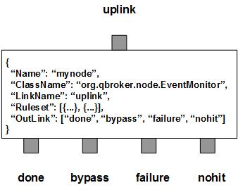

EventMonitor monitors incoming JMS events and keeps tracking their states according to the rulesets and the content of the aggregated events. In case that the state changes up to a certain point, EventMonitor will generate a new JMS event as the escalation. All escalation events will be routed to the done outLink. For all the incoming events, EventMonitor routes them into three outlinks: bypass for all the processed incoming events, nohit for those events do not belong to any rulesets, failure for the incoming events failed in the process.
EventMonitor contains a number of predefined rulesets. These rulesets categorize incoming events into non-overlapping groups. Therefore, each ruleset defines a unique event group. It contains the name of the rule, and an EventSelector to select events for the group. If PreferredOutLink is defined in the ruleset, it is treated as a bypass ruleset. Otherwise, it will be treated as an escalation ruleset that may generate extra messages.
For each incomiong event, EventMonitor will match it against every EventSelectors to single out a ruleset. There are two cases for escalation rulesets. If ClassName is defined in a ruleset, it will be used to instantiate an instance of EventEscalation. Otherwise, it is the timeout escalation ruleset in which EventMonitor expects certain events showing up frequently. If a ruleset of EventEscalation is selected, EventMonitor will invoke its public method of escalate() to evalaute the event. The instance of EventEscalation is supposed to maintain the state for the event group. In case that a state change is up to certain point, an escalation event will be generated by its method of escalate(). This event will contain details of the state change. It will be delivered according to the predefined EscalationOrder with the value of either "first", "last" or "none" for no order preference. In case of "first" or "last", the ruleset also allows ActionDelay defined in millisec. In case of the ruleset of "last", it specifies how long the escalation gets delayed. For the ruleset of "first", the delay happens after the escalation. EscalationMask controls the display mask on escalation messages.
In case of a ruleset for timeout escalations, EventMonitor will cache the properties of the incoming event for an new state or update the timestamp of an existing state with the incoming event. The ruleset expects certain events kept coming to keep it up to date. If the expected event has not shown up within a given interval, an escalation event will be generated as the escalation with the priority set to EscalationPriority. A list of attribute names is specified in CopiedProperty. Those attributes will be cached from the first incoming event to the escalation event. The tracking session for an existing state can be terminated by an event whose priority is same as the predefined ResetPriority of the ruleset. The timeout escalation ruleset is good to track those alerts fired only once.
EventMonitor always creates one extra ruleset, nohit. The ruleset of nohit is for those events not hitting any patterns. Its RULE_PEND field is used to store the total number of cached states for all timeout rulesets. Please remember that there is no one-to-one relationship between the candidate events and the esacaltion events. The total number of escalation events for a ruleset is stored into its RULE_PEND field.
You are free to choose any names for the four fixed outlinks. But EventMonitor always assumes the first outlink for done, the second for bypass, the third for failure and the last for nohit. Any two or more outlinks can share the same outlink name. It means these outlinks are sharing the same output channel.
The escalation is executed via the pre-defined rulesets. Therefore, the configuration of the rulesets is critical to the operations of EventMonitor. Here are complete properties of rulesets for the node of EventMonitor.
| Property Name | Data Type | Requirement | Description | Examples |
|---|---|---|---|---|
| Name | alphanumeric with no spaces | mandatory | name of the ruleset | event |
| Type | string | mandatory | type of the Escalation | MessageTracker |
| ClassName | string | mandatory | full class name of implementation for EventEscalation | org.qbroker.node.EventTracker |
| TimeToLive | integer | mandatory | timeout in sec for tracking sessions | 900 |
| EscalationPattern | list | optional | list of patterns to terminate the session | see example |
| KeyTemplate | string | required for timeout ruleset | template for the tracking key | ##name## |
| ResetPriority | String | optional | name of the pririty to reset the escalation state | INFO |
| EscalationPriority | string | required for timeout ruleset | name of the priority for escalated event | CRIT |
| EscalationMask | Integer | optional | DisplayMask for escalated event | 6 |
| ActiveTime | map | optional | active time windows | see example |
| Tolerance | integer | optional | to escalate WARNING on the first specific number of consecutive failures | 2 (default: 0) |
| MaxRetry | integer | optional | to escalate ERR up to specific number of times if failure persists | 2 (default: 0) |
| MaxPage | integer | optional | to escalate CRIT up to specific number of times if failure persists | 2 (default: 0) |
| QuietPeriod | integer | optional | to keep quiet up to specific number of times if failure still persists | 2 (default: 2) |
| Aggregation | list | optional | list of aggregations | see example |
| CopiedProperty | list | optional | for copying over the properties from the event | see example |
| PreferredOutLink | alphanumeric with no spaces | mandatory for bypass only | name of the preferred outlink | bypass |
| EventPattern | list | optional | list of patterns to select events | see example |
| XEventPattern | list | optional | list of patterns to exclude events | see example |
| StringProperty | map | optional | for displaying or resetting properties on the events | see example |
| DisplayMask | integer | optional | mask for loggings | 64 (default: -1) |
{
...
"Aggregation": [{
"FieldName": "body",
"Operation": "append",
"DefaultValue": ""
}],
...
}
Currently, there are two implementations of EventEscalation, EventTracker and EventEscalator. Each implementation may have its own configuration parameters. Here is an example of a ruleset for MessageTracker with Aggregation:
{
"Name": "dam_bmam_invalid_syslog",
"ClassName": "org.qbroker.event.EventTracker",
"Site": "IPE",
"Type": "MessageTracker",
"Category": "DAM",
"Description": "validating archived file size from BMAM and notify BMAM support if it happens",
"Tolerance": "0",
"MaxRetry": "8",
"MaxPage": "2",
"QuietPeriod": "0",
"MinTimeSpan": "1",
"EventPattern": [{
"type": "^syslog$",
"priority": "^INFO$",
"AssetID": "^\\d+$",
"hostname": "^damworker4prod[1-5]$",
"TaskName": "^VALIDATE_TRANSFORMED$",
"Rule": "^GENERIC_FILE_VALIDATION_FAILURE$",
"Group": "^FILE_TRANSFER_SERVER_TO_ARCHIVE$"
}],
"XEventPattern": [{
"Rest": "TaskExecutionException"
}],
"TimeToLive": "10800",
"KeyTemplate": "##name##_##AssetID##",
"Aggregation": [{
"FieldName": "eventCount",
"Operation": "count",
"DefaultValue": "1"
},{
"FieldName": "hostname",
"Operation": "last",
"DefaultValue": "unknown"
},{
"FieldName": "RequestID",
"Operation": "first",
"DefaultValue": ""
},{
"FieldName": "LogTime",
"Operation": "first",
"Default": ""
},{
"FieldName": "TaskName",
"Operation": "first",
"Default": "Unknown"
},{
"FieldName": "AssetID",
"Operation": "last",
"Default": "0"
},{
"FieldName": "Rule",
"Operation": "last",
"Default": ""
},{
"FieldName": "Group",
"Operation": "last",
"Default": ""
},{
"FieldName": "Level",
"Operation": "last",
"Default": ""
},{
"FieldName": "Desc",
"Operation": "last",
"Default": ""
},{
"FieldName": "Advice",
"Operation": "last",
"Default": ""
},{
"FieldName": "url",
"Operation": "last",
"Default": ""
},{
"FieldName": "bmam_url",
"Operation": "last",
"Default": ""
},{
"FieldName": "Rest",
"Operation": "first",
"Default": "yyy",
}],
"EscalationPattern": [{
"eventCount": ["[1,)"]
}],
"CopiedProperty": [
"type",
"hostname",
"RequestID",
"LogTime",
"TaskName",
"AssetID",
"Rule",
"Group",
"Level",
"Desc",
"Advice",
"url",
"bmam_url",
"Rest"
],
"ActiveTime": {
"TimeWindow": [{
"Interval": "00:00:00-24:00:00"
}]
}
}
where this rule is of MessageTracker for all BMAM events from DAM. As you can
see, it reacts to every BMAM alerts.
Here is an example of EventMonitor:
{
"Name": "node_monitor",
"ClassName": "org.qbroker.node.EventMonitor",
"Operation": "monitor",
"Capacity": "1024",
"LinkName": "action",
"XAMode": "1",
"DisplayMask": "6",
"Debug": "1",
"StringProperty": {
"priority": "",
"name": "",
"hostname": "",
"site": "",
"category": ""
},
"Ruleset": [
"ardendo_monitor",
"lep_path",
"dam_bmam_invalid_syslog",
"dam_harris_syslog",
"dam_zero_size_syslog",
"asset_syslog",
"dam_syslog"
],
"OutLink": ["pub", "pub", "pub", "pub"]
}
where all the rules are defined externally.